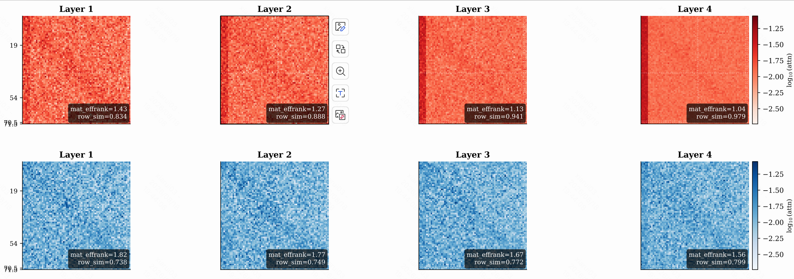

同一个结构，两种深度命运相同的 self-attention、相同的残差结构——为什么一个能变深，一个在浅层就饱和？
语言建模中的 Transformer 几乎可以无限加深，深度成为可扩展的维度；而在广告、排序与推荐场景，统一的排序 Transformer 堆叠至约 6–8 层时增益便趋于平缓，继续加深反而可能更差。二者采用相同的注意力机制与残差结构，因此差异必然源于别处。本文沿三个逐步收紧的环节展开，尽量以符号推进论证：
深层崩塌：行随机连乘趋向秩 1注意力的一次加权平均本质，是后续一切讨论的出发点
记输入 token 矩阵为 \(X\in\mathbb{R}^{T\times d}\)。标准自注意力先经线性投影，再对各行施加 softmax 归一化：
\((A_\ell)_{ij}\) 为 token \(i\) 分配给 token \(j\) 的注意力权重。各行非负且归一，满足 \(A_\ell\mathbf{1}=\mathbf{1}\)，故 \(A_\ell\) 是行随机矩阵：它不改变总质量，仅决定每一行的质量分配。
\((M_\ell)_i\) 是各值向量的凸组合。忽略残差与 FFN 后，\(L\) 层注意力的复合效果为
\[H^{(L)}\;\propto\;A_L\,A_{L-1}\cdots A_1\,V\]行随机矩阵的连乘具有已知的代数性质：各行的均值方向被不断对齐，最终收敛到秩 1 矩阵。
若 \(A_1,\dots,A_L\) 为行随机矩阵且满足一致遍历性条件，则
\[\underbrace{A_L\cdots A_1}_{L\text{ 个行随机矩阵}}\;\longrightarrow\;\mathbf{1}\,\boldsymbol p^{\top}\quad\text{（秩 1）}\]其中 \(\boldsymbol p\) 为平稳分布。收敛速度由次主特征值 \(|\lambda_2|\) 决定：差异方向按 \(|\lambda_2|^L\) 衰减。Dong et al. (2021) 在无残差设定下证明该收敛为双重指数速度——有效秩在 \(O(\log L)\) 层内即趋近 1，且这一加速源于注意力矩阵依赖其自身输入所产生的级联效应。
在初始化假设 \(A_\ell\approx\tfrac1T\mathbf{1}\mathbf{1}^\top\) 下，定义 token 平均相关性
\[\rho^{\ell}=\frac{1}{T(T-1)}\sum_{k\ne k'}\frac{\langle X_k^{\ell},\,X_{k'}^{\ell}\rangle}{\lVert X_k^{\ell}\rVert\,\lVert X_{k'}^{\ell}\rVert}\]他们沿三个层次刻画崩塌（记号按原文）：
- Lemma 3.1（梯度范数消失）：若第 \(\ell\) 层的 token 相关性 \(\rho^\ell\to1\)，则输出 \(X^\ell\) 依概率收敛到秩 1 矩阵；在均匀注意力假设 \(A_\ell=\tfrac1T\mathbf 1\mathbf 1^\top\) 下，对 \(Q,K\) 的梯度范数严格为零——表示空间坍缩的同时，学习信号被同步切断。
- Theorem 3.1（梯度消失）：Token 相关性在无限深极限下以幂律方式趋于 1（而非指数），由此导致的梯度消失是秩崩塌的直接后果：梯度范数随深度收敛到 0，其速率由剩余相关性决定。
- Theorem 3.2（残差缩放的判别）：设残差缩放 \(\alpha_1^2=\alpha_2^2=\alpha^2\)。若按深度缩放 \(\alpha^2=\tilde\alpha/L\)（即 \(1/\sqrt{L}\) 缩放），则 \(\lim_{L\to\infty}\rho^{\ell}<1\)，秩在无穷深处仍被保住；若 \(\alpha^2\) 为常数，则 \(\lim_{L\to\infty}\rho^{\ell}=1\)，秩必定崩塌。
三者合起来给出一个判别准则：残差缩放是否随 \(L\) 衰减，直接决定无穷深度处相关性是否趋于 1、梯度是否消失。如前文所述，秩 1 时 \(Q,K\) 的梯度严格为零：
\[\mathbb{E}\left\lVert\tfrac{\partial\mathcal L}{\partial W^{Q,\ell}}\right\rVert_F^2=0,\qquad \mathbb{E}\left\lVert\tfrac{\partial\mathcal L}{\partial W^{K,\ell}}\right\rVert_F^2=0\]注意力矩阵的两个最大奇异值之间会出现谱间隙（spectral gap）。随机矩阵理论表明，这个间隙驱动宽度方向的秩崩塌，并进一步加速深度方向的崩塌。去除该间隙可以缓解崩塌，但深度方向的秩崩塌是连乘的固有结果，结构改动只能减缓、不能消除。
秩崩塌在语言里同样存在，但 \(1/\sqrt{L}\) 残差缩放把它减缓了：相关性在无穷深处不趋于 1，梯度不消失，深度因此成为可预测的扩展轴。这一环节说明：崩塌的速度不是固定的，它取决于输入的谱与结构。
推荐输入的低秩谱：奇异值集中，谱间隙大机制相同，触发却提前：起始状态已不同
语言 token 位于连续平滑的语义流形上；推荐 token 则高度离散、异质且严重长尾——同一 item、创作者、类目或意图在一次请求的近期行为中反复出现。Cui et al. (2026, SpecFormer) 观察到，这种异质与长尾直接表现为嵌入矩阵的谱崩塌（spectral collapse）：
对输入嵌入矩阵 \(H\in\mathbb{R}^{T\times d}\) 做奇异值分解 \(H=U\Sigma V^\top\)，\(\Sigma=\operatorname{diag}(\sigma_1,\dots,\sigma_r)\)，\(\sigma_1\ge\sigma_2\ge\cdots\)。推荐场景下谱高度集中：
\[\frac{\sigma_1}{\sum_k\sigma_k}\;\text{接近 1},\qquad \sigma_{k\ge2}\le\epsilon\,\sigma_1\quad(\epsilon\ll 1)\]即第一个奇异值独占几乎全部能量，其余奇异值迅速衰减——谱间隙大。少数主奇异向量支配表示空间，长尾信息所在的次奇异方向被压制。SpecFormer 以奇异值整形（spectral reshaping）量化这一观测：
\[\widetilde\Sigma=\operatorname{diag}\!\big(\sigma_1^{\tau},\,\sigma_2^{\tau},\,\dots,\,\sigma_r^{\tau}\big),\qquad \tau=\operatorname{Sigmoid}(a)\in(0,1)\]指数 \(\tau<1\) 对大奇异值施加压缩、对小奇异值相对保留：\(\sigma_k\mapsto\sigma_k^{\tau}\) 使集中能量重新分布。参数 \(a\) 初始化为 \(\tau\approx0.5\)，随训练自适应——谱整形是一个连续可微的全局重排，作用于嵌入矩阵 \(H\) 本身。
把"差异预算"写成公式
把 token 矩阵拆成均值方向与差异方向：
\[X=\underbrace{\mathbf{1}\,\bar x^{\top}}_{\text{均值（秩 1）}}+\underbrace{X_{\perp}}_{\text{差异（被逐层压缩）}}\]行随机矩阵满足 \(A\mathbf{1}=\mathbf{1}\)，原样保留均值方向；差异方向按次主特征值 \(|\lambda_2|\le1\) 逐层压缩。\(L\) 层后差异能量 \(\approx|\lambda_2|^L\cdot(\text{初始差异})\)，崩塌发生在它降到阈值 \(\delta\) 之下时：
\[L^{\star}\;\sim\;\frac{\log\!\left(\sum_{k\ge2}\sigma_k^2/\,\delta\right)}{\log(1/|\lambda_2|)}\]- 分子小（推荐独有）：低秩输入的差异能量 \(\sum_{k\ge2}\sigma_k^2\) 极小，\(L^{\star}\) 被直接压低；
- 分母大（恶性循环）：低秩 \(X\) 使 \(Q,K\) 同源 ⇒ \(A\to\tfrac1T\mathbf{1}\mathbf{1}^{\top}\)，\(|\lambda_2|\to0\)，\(\log(1/|\lambda_2|)\to\infty\)，\(L^{\star}\) 再次缩短。
- 前向（低通滤波）：坍缩的嵌入 \(H\) 生成低秩注意力矩阵 \(A\)。低秩 \(A\) 相当于低通滤波器——它仅沿主导方向平滑 token 表示，次奇异方向的差异被滤除，表示进一步退化；
- 反向（梯度饥饿）：低秩注意力把梯度投影到主导子空间，次奇异方向遭受梯度饥饿（gradient starvation），得不到有效更新，下一轮嵌入更坍缩。
SpecFormer 以 fractional effective rank 度量此过程，并论证前向低通与反向饥饿构成互相加强的闭环。其解法——谱整形 \(\widetilde\Sigma\)——直接作用于该闭环：打破前向的谱集中，使次奇异方向重新获得梯度。这一闭环亦解释了为何推荐 Transformer 在远浅于语言模型的层数即发生崩塌。
但整体平均的视角仍停留在"秩 1 极限"的粗粒度描述上，它区分不了是哪些路径在加速这一过程。下一节我们把镜头对准相邻两层之间的路径结构。
局部化：回溯路径给矩阵连乘带来的偏差网络科学早就见过同一现象：主特征向量集中在少数 hub 上，谱质量被反复主导放大
"低通平均"描述整体混合，但不区分路径。网络科学中有一个平行的现象：当图中存在高度数 hub 时，邻接矩阵的主特征向量会局部化在 hub 及其邻域上——谱质量集中到少数节点，即所谓的局部化（localization）（Martin et al. 2014；Newman 2013）。其根源是一个明确的机制：
邻接矩阵的幂 \((A^2)_{ij}\) 计数从 \(i\) 到 \(j\) 的两步路径。其中形如 \(i\to j\to i\) 的路径回到原点，被重复计入、且不携带跨 token 的新信息。这类回溯路径在 hub 上密集存在，使 hub 及其邻域在矩阵幂中获得虚高的权重，主奇异向量被一次次放大，最终局部化。
\[(A^2)_{ij}=\sum_k A_{ik}A_{kj}=\underbrace{\sum_{k\ne i}A_{ik}A_{ki}\,\delta_{ij}}_{\text{回溯（对角）}}+\underbrace{\sum_{k}A_{ik}A_{kj}\,\mathbf{1}_{k\ne i}}_{\text{前向（跨 token）}}\]注意力矩阵连乘 \(A_\ell A_{\ell-1}\) 遇到完全相同的结构：其中有一类路径，第 \(\ell-1\) 层从 \(i\) 走到 \(j\)，第 \(\ell\) 层又从 \(j\) 回到 \(i\)——走了两步，回到原点，我们称之为回溯（backtrack）。定义其质量：
\(A_\ell\odot A_{\ell-1}^{\top}\) 在位置 \((i,j)\) 记录"第 \(\ell\) 层关注 \(j\)"与"第 \(\ell-1\) 层 \(j\) 关注 \(i\)"的乘积——一条互反边对的回溯强度。扣除平凡自注意力后按行求和，得到 token \(i\) 的两步回返总质量 \(b_{\ell,i}\)。于是两步算子被严格分解为
\[P_\ell=D_\ell+C_\ell,\qquad D_\ell=\operatorname{Diag}(\boldsymbol b_\ell),\qquad C_\ell=P_\ell-D_\ell\]分解后，\(D_\ell X=[b_{\ell,1}X_1;\dots;b_{\ell,T}X_T]\) 仅对既有 token 方向施加逐点增益，不引入任何跨 token 通道；跨 token 的信息搬运全部由 \(C_\ell\) 承担。若 \(\boldsymbol b_\ell\) 在少数 hub 上显著偏大，连续传播将反复放大这些位置——总能量守恒乃至局部增长，但归一化奇异谱向少数方向集中，有效秩下降显著加速。
Martin et al. (2014, arXiv:1401.5093) 在"稀疏、局部树状随机图 + 单一 hub"模型里给出可计算阈值。设背景平均度 \(c\)、hub 期望度 \(d\)。背景模态与 hub 模态近似为
\[\lambda_{\mathrm{bulk}}\simeq c+1,\qquad \lambda_{\mathrm{hub}}=\frac{d}{\sqrt{d-c}},\qquad \boxed{\,d>c(c+1)\;\Rightarrow\;\text{hub 模态越过背景谱}\,}\]越过阈值后，局部化是定量的：hub 特征向量质量 \(v_h^2=\frac{d-2c}{2d-2c}=O(1)\) 集中于 hub 自身，其邻居各承担 \(v_n^2\approx\frac1{d-c}\)，其余节点按 \(O(1/n)\) 消失；逆参与率 \(\mathrm{IPR}=\sum_k v_k^4\) 由背景的 \(O(1/n)\) 升至 \(O(1)\)。这正是 SpecFormer 所述谱崩塌在特征向量层面的等价表述：输入侧"首个奇异值独占能量"，对应图侧"主特征向量局部化于 hub"——同一现象的两套记号，一个写在 \(\Sigma\) 上，一个写在 \(V\) 上。
将两边的记号对齐：SpecFormer 的"谱集中" \(\sigma_1\gg\sigma_{k\ge2}\)，正是 Martin 模型中 hub 模态越过背景谱 \((d>c(c+1))\) 后的主特征向量局部化。区别仅在作用对象——SpecFormer 直接整形 \(\Sigma(H)\)（作用于表示矩阵本身），而局部化视角将同一现象归因于图结构：高回溯质量的 hub 是主导方向的路径级来源。于是问题由"谱已集中，如何重排"转变为"何种路径制造了集中，能否直接移除"。这一转变为下一节构造非回溯算子提供了动机。
上述阈值是固定、无向、稀疏随机图的结果，不能直接当作稠密、有向、随样本变化的注意力矩阵的定理。可迁移的是路径机制：互反边对反复贡献于邻接幂、强化局部主模态。推荐场景的对应假设是——重复 item / 类目 / 意图形成请求级 hub，且高回溯质量与高 IPR、低 \(\sigma_2/\sigma_1\) 同时出现。这是待验证假设，不是从低秩输入自动推出的结论。
非回溯算子：移除连乘中的回溯偏差网络科学的对应解：禁止紧邻的反向边
既然回溯路径在矩阵连乘中引入偏差，一个自然的候选修正便是将其精确扣除。网络科学在随机游走、谱中心性、社区检测中遇到相同的局部化问题时，采用的正是这一思路。非回溯算子（Hashimoto 1989；Krzakala et al. 2013）的构造目标即禁止紧邻的反向边。
因子 \(1-\delta_{il}\) 精确排除 \(i\to j\to i\)：从边 \(i\!\to\!j\) 只能走到 \(j\!\to\!k\)，一步折返被禁止。Krzakala et al. (2013) 证明，在随机图模型中该算子维持清晰的谱边缘与非零谱间隙，即使平均度很低。
回到上一节的单一 hub 模型。对邻接矩阵，hub 制造了越过背景谱的主导模态 \(d/\sqrt{d-c}\)；对非回溯矩阵，同样的 hub 不再引入新主导特征值——非回溯谱半径的贡献来自
\[z\;\approx\;\frac{\langle k^2\rangle-\langle k\rangle}{\langle k\rangle}\;\sim\;c\]与 hub 度数 \(d\) 无关（这里 \(\langle k\rangle,\langle k^2\rangle\) 为节点度数均值）。换言之：将"立即折返"路径从计数中剔除后，hub 的谱质量贡献被抑制，局部化模态不再成立——此即"非回溯可避免谱崩塌"的理论依据：它所移除的，正是制造主导局部模态的那条路径。这与 SpecFormer 的谱整形同源而分工不同：SpecFormer 对已集中的 \(\Sigma(H)\) 做全局重排，属事后整形；非回溯对产生集中作用的路径做事前剔除。前者重排能量，后者移除来源。
对固定无向图，计数非回溯游走的多项式满足递推：
\[P_0=I,\quad P_1=A,\qquad \boxed{\,P_2=A^2-D\,},\qquad P_k=A\,P_{k-1}-(D-I)\,P_{k-2}\]其中 \(D_{ii}=\sum_j A_{ij}A_{ji}\)（无权无向图上退化为度矩阵）。\(P_2\) 精确移除长度为 2 的回溯路径：邻接平方后，把"往返同一条边"的对角质量全部扣掉。
TDA 继承的是非回溯理论的路径级构造（degree-two 的 \(A^2-D\)），而非固定图上完整的 Ihara–Bass 谱结论。注意力图稠密、加权、有向且随层变化，不存在现成的完整谱等价。TDA 是 degree-two 截断：移除可明确识别的回溯项；其去局部化与保秩效果，仍需由注意力乘积的 IPR 与奇异谱实验确认。此外，Martin et al. (2014) 指出非回溯矩阵并非对所有结构免疫——例如在团（clique）上仍可能局部化；在注意力语境下，这意味着"整组 token 互相高度关注"的稠密子结构是 TDA 不触及的、可能保留的另一种集中来源。与 SpecFormer 的分工亦由此界定：谱整形重排全部奇异值，TDA 仅剔除回溯路径——前者作用于谱，后者作用于路径。
TDA：把回溯质量门控地减掉非回溯注意力（TDA）——一个插件，只改注意力消息，什么都不动
将上述思路落地为工程实现：TDA 仅修改注意力消息，tokenization、共享 QKV、残差、FFN、预测头均保持不变。对每个头 \(h\)，利用缓存的相邻层注意力权重构造互反矩阵与回溯质量：
\[R_{\ell,h}=\mathrm{OffDiag}\!\big(A_{\ell,h}\odot A_{\ell-1,h}^{\top}\big),\quad \boldsymbol r_{\ell,h}=R_{\ell,h}\,\mathbf 1,\quad D_{\ell,h}=\mathrm{Diag}(\boldsymbol r_{\ell,h})\]其中 \(\bar H_{\ell-1}\) 是上一层的归一化历史状态；\(P_{\ell,h}\) 把它投影到 head 维（经济实现复用上一层 \(W_V\)，零额外参数）；\(\beta_{\ell,h}=\sigma(b_{\ell,h})\in[0,1]\) 是每头每层的可学门控，初始化近 0——训练从"未改动的 backbone"起步，修正只在数据真正受益处生长。第 1 层无 \(A_0\) 可用，保持标准注意力。
对角算子的作用：逐格的解读
为何修正项取形如 \(D_{\ell,h}P_{\ell,h}\bar H_{\ell-1}\)，而非直接作用于本层消息？逐项考察：\(\beta_{\ell,h}\) 为标量门控，\(D_{\ell,h}\) 为纯对角矩阵，\(P_{\ell,h}\bar H_{\ell-1}\) 为上一层表示的投影。整体效果是逐 token 施加一个系数——不搬运任何跨 token 信息，仅按回溯质量缩放每个 token 的历史状态。这与第 4 节的机制一完全一致：回溯不创造新通道，故只应作为逐点的增益加以处理。
跨 token 路径保留（绿）
矩阵观给出一个简洁的代数结论：\(A_\ell A_{\ell-1}\) 的对角元恰为第 4 节定义的"两步回返总质量"，减去 \(\beta_\ell D_\ell\) 后，对角被置零、跨 token 项保持不变。需注意，对角压低仅在"两步算子"层面成立；跨层乘积 \(A_\ell A_{\ell-1}A_{\ell-2}\cdots\) 的谱如何演化，取决于这些非回溯路径在更深乘积中的累积——这正是第 7 节以 row similarity 与 effective rank 检验的对象。
把上面的代数落成可执行逻辑（伪代码，\(@\) 为矩阵乘法，逐头独立）：
def attention(H_l):
A_l = softmax(LN(H_l)@W_Q @ (LN(H_l)@W_K).T / sqrt(d_h)) # O(T²d_h)
M_l = A_l @ (LN(H_l)@W_V) # O(T²d_h)
return A_l, M_l
# ── TDA 修正（新增，全部低阶）──
def tda(A_l, A_prev, H_prev, beta, W_V):
R_l = A_l * A_prev.T # O(T²) Hadamard
r_l = R_l.fill_diagonal_(0).sum(dim=1) # O(T²) 去对角+行和
D_l = diag(r_l) # O(T) 对角算子
M_prev = A_prev @ (LN(H_prev)@W_V) # O(T²d_h) 复用上一层 V 投影
M_tilde = M_l - beta * D_l @ M_prev # O(Td) 门控减法
return M_tilde
# 新增总开销 = O(T²) + O(T²) + O(T) + O(Td) = O(T² + Td) 每头
# 对 H 头：O(HT² + Td)，低于注意力本身 O(T²d)（因 d_h ≫ 1）
# 且 P 复用上一层 W_V → 不引入任何新参数
互反对积 \(A_\ell\odot A_{\ell-1}^{\top}\) 与行和 \(O(HT^2)\)（缓存 \(O(HT^2)\)）；历史投影复用上一层 \(W_V\)，\(O(Td)\)；对角修正与减法 \(O(Td)\)。总计每块 \(O(HT^2+Td)\)——相对注意力本身的 \(O(T^2d)\) 低一个 \(d_h\) 因子，相对谱整形的 \(O(T^2d+Td^2)\) 可以忽略。短序列推荐（\(T\approx59\)）实测开销约 2–3% FLOPs。
四条性质
令 \(D_{\ell,ii}=\sum_{j\ne i}A_{\ell,ij}A_{\ell-1,ji}\)，则 \((A_\ell A_{\ell-1}-D_\ell)H_{\ell-1}\) 等于所有加权两步路径的聚合，除去回溯 \(i\!\to\!j\!\to\!i\)。
对任意 token 置换 \(\Pi\)：\(\widetilde M'_\ell=\Pi\,\widetilde M_\ell\)。重排 token 顺序，修正随之重排——结构是 token-order invariant 的。
若 \(A_\ell,A_{\ell-1}\) 非负行随机，则 \(0\le r_{\ell,i}\le1\)，且 \(\lVert\beta_\ell D_\ell X\rVert_{\infty,2}\le\lVert X\rVert_{\infty,2}\)。修正不会放大单行范数——它是压缩而非放大，数值上是安全的。
若 \(A_{\ell,ij}A_{\ell-1,ji}=0\ (\forall i\ne j)\)，则 \(D_\ell=0\)，TDA 退化为标准注意力。特别地，同一因果序的两层序列注意力满足此条件——TDA 不会在纯因果序列子图上产生修正，只作用于推荐场景独有的双向异质交互。
观测：TDA 让崩塌更慢以行相似度与有效秩两个量纲，度量注意力矩阵随深度的退化速率
若上述路径机制成立，则存在一个可检验的预测：移除回溯路径后，注意力矩阵（及其跨层乘积）的退化应被减缓——各行不再快速地趋向一致，有效秩不再快速地滑向 1。以下给出以 row similarity 与 effective rank 为度量的对比观测。
- row similarity：行间两两余弦相似度的均值，刻画"各行是否趋同于同一均值向量"；越接近 1 表示崩塌越深。
- effective rank：\(\mathrm{erank}(A)=\exp\!\left(-\sum_k p_k\log p_k\right)\)，其中 \(p_k=\sigma_k^2/\sum_k\sigma_k^2\) 为归一化奇异值能量；有效秩越低表示谱越集中。

标准注意力的深层乘积趋向低有效秩；TDA 从相邻两层读出回溯质量并施加门控修正后，行相似度与有效秩的退化均被减缓。这是与"回溯路径加速崩塌"假设一致的间接证据，其因果性与普适性仍有待更系统的实验验证。
整条逻辑链从输入几何到网络科学，一条线把所有环节串起来
① 深度崩塌（一般机制）
行随机连乘趋向秩 1：\(A_L\cdots A_1\to\mathbf{1}\,\boldsymbol p^{\top}\)。语言模型用残差缩放减缓它。
② 推荐输入低秩
奇异谱集中：\(\sigma_1\gg\sigma_{k\ge2}\)，谱间隙大。差异预算 \(\sum_{k\ge2}\sigma_k^2\) 极小，\(L^{\star}\) 被压低。
③ 局部化（网络科学视角）
回溯路径 \(i\!\to\!j\!\to\!i\) 在请求级 hub 上反复往返，给矩阵连乘引入偏差，主奇异向量被持续放大。
④ 非回溯算子
精确扣除回溯偏差：\(P_2=A^2-D\)（Hashimoto 1989；Krzakala et al. 2013；Martin et al. 2014）。
⑤ TDA：门控减回溯
缓存相邻层注意力、读出回溯质量、门控减去。row similarity 与 effective rank 的退化均放缓。
⑥ 待验证
路径机制、局部化阈值与崩塌减速的因果性，仍需在真实推荐数据上以系统实验确认。
排序 Transformer 的深度天花板，可能不仅来自输入的低秩，还来自一条被回溯路径持续放大的局部化通道。识别并扣除它，是加深深度的一条可行路径。
- Dong et al. 2021. Attention is not all you need: pure attention loses rank doubly exponentially with depth. ICML 2021. arXiv:2103.03404.
- Noci et al. 2022. Signal Propagation in Transformers: Theoretical Perspectives and the Role of Rank Collapse. arXiv:2206.03126.
- Saada et al. 2024. Mind the Gap: a Spectral Analysis of Rank Collapse and Signal Propagation in Transformers. arXiv:2410.07799.
- Cui et al. 2026. SpecFormer: Mitigating Embedding and Attention Collapse via Spectral-Aware Transformer for Recommendation. arXiv:2607.24025.
- Martin, Zhang & Newman 2014. Localization and centrality in networks. Phys. Rev. E 90, 052808. arXiv:1401.5093.
- Krzakala et al. 2013. Spectral redemption: clustering sparse networks. PNAS 110(52). arXiv:1306.5550.
- Newman 2013. Spectral community detection in sparse networks. arXiv:1308.6494.
- Hashimoto 1989. Zeta functions of finite graphs and representations of p-adic groups. Adv. Stud. Pure Math. 15, 211–280.